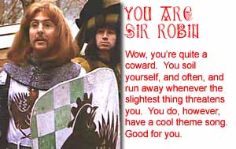

Nu! No no, Ni!
zaterdag 26 april 2003 | Actualiteit
Deze Morgen De Morgen vergeten ophalen in de krantenwinkel… Daar gaat mijn eerste spaarpunt voor de collectie Monty Python DVD’s (Holy Grail, Life of Brian, Meaning of Life en Jabberwocky). Gelukkig had ik de eerste drie al in de kast staan. Sla me dood, maar van die vierde film, Jabberwocky, had ik nog nooit gehoord. Alweer iets toegevoegd aan mijn lange lijst ‘nog te zien’.
Met welk personage uit the Holy Grail kom jij eigenlijk het beste overeen? Doe de test op Quizilla.

Tiffany op 22 augustus 2004
GRAPPIG!!! zo ne zalige film , ik heb me een breuk gelachen en elke keer ik er naar kijk lach ik me krom. In al zijn marginaliteit een geniale film. Verstand op nul en er naar kijken! 12/10--> DA menek!